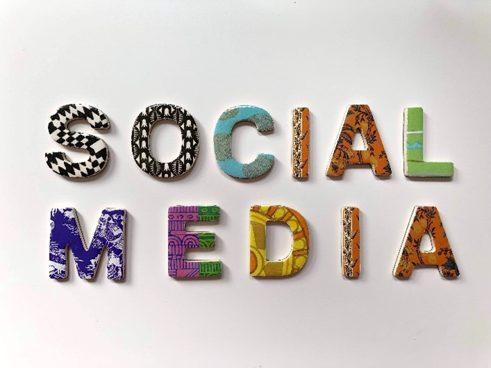
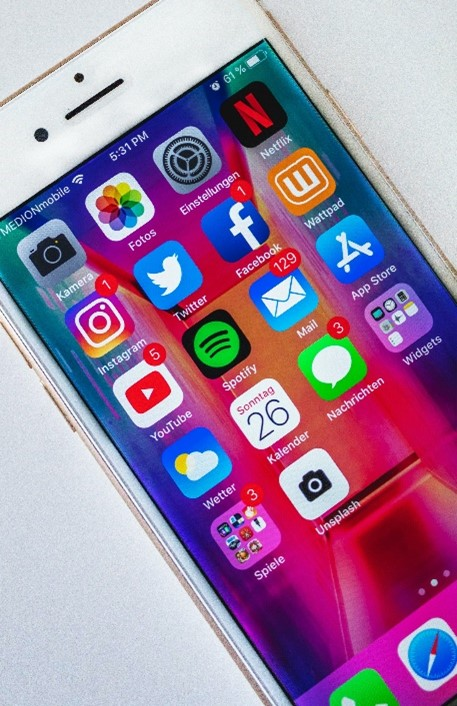

People Power

As John Heilemann in the last episode of “The True Story of the Internet” says, “By now we all know the web
has changed the world, but this is the story of how the world is changing the web.” It was termed as Web 2.0
time when the World Wide Web sites emphasized on user generated content and social networking. Towards the
end of the episode, the Founder of Craigslist says: “The web is not just about making money, it’s about
setting communication free.”
The Internet has changed the society and new age entrepreneurs are shaping the world by making the web
interactive. The communication was uprising all around us. New generation companies like YouTube, MySpace
and Facebook, turned the web into a two-way participatory and democratic medium controlled by no-one and
shaped by everyone which is known as the Web 2.0.
The Web 2.0(also known as Participative (or Participatory) and Social Web) refers to websites that emphasize
user-generated content, ease of use, participatory culture and interoperability (i.e., compatible with other
products, systems, and devices) for end users. A Web 2.0 website allows users to interact and collaborate
with each other through social media dialogue as creators of user-generated content in a virtual community.
This contrasts the first generation of Web 1.0-era websites where people were limited to viewing content
in a passive manner. Examples of Web 2.0 features include social networking sites or social media sites
(e.g., Facebook), blogs, wikis, folksonomies ("tagging" keywords on websites and links), video sharing sites
(e.g., YouTube), image sharing sites (e.g., Flickr), hosted services, Web applications ("apps"),
collaborative consumption platforms, and mashup applications.

The term Web 2.0 did not resurface until 2002. Kinsley and Eric focus on the concepts currently associated
with the term where, as Scott Dietzen puts it, "the Web becomes a universal, standards-based integration
platform". In 2004, the term began to popularize when O'Reilly Media and MediaLive hosted the first Web 2.0
conference. In their opening remarks, John Battelle and Tim O'Reilly outlined their definition of the "Web
as Platform", where software applications are built upon the Web as opposed to upon the desktop. The unique
aspect of this migration, they argued, is that "customers are building your business for you". They argued
that the activities of users generating content (in the form of ideas, text, videos, or pictures) could be
"harnessed" to create value. O'Reilly and Battelle contrasted Web 2.0 with what they called "Web 1.0".
They associated this term with the business models of Netscape and the Encyclopedia Britannica Online.
For example, Netscape framed "the web as platform" in terms of the old software paradigm: their flagship
product was the web browser, a desktop application, and their strategy was to use their dominance in the
browser market to establish a market for high-priced server products. Control over standards for
displaying content and applications in the browser would, in theory, give Netscape the kind of market
power enjoyed by Microsoft in the PC market. Much like the "horseless carriage" framed the automobile
as an extension of the familiar, Netscape promoted a "webtop" to replace the desktop, and planned to
populate that webtop with information updates and applets pushed to the webtop by information providers
who would purchase Netscape servers.
In short, Netscape focused on creating software, releasing updates and bug fixes, and distributing it to
the end users. O'Reilly contrasted this with Google, a company that did not, at the time, focus on
producing end-user software, but instead on providing a service based on data, such as the links that
Web page authors make between sites. Google exploits this user-generated content to offer Web searches
based on reputation through its "PageRank" algorithm. Unlike software, which undergoes scheduled
releases, such services are constantly updated, a process called "the perpetual beta". A similar
difference can be seen between the Encyclopædia Britannica Online and Wikipedia – while the Britannica
relies upon experts to write articles and release them periodically in publications, Wikipedia relies on
trust in (sometimes anonymous) community members to constantly write and edit content. Wikipedia editors
are not required to have educational credentials, such as degrees, in the subjects in which they are
editing. Wikipedia is not based on subject-matter expertise, but rather on an adaptation of the open
source software adage "given enough eyeballs, all bugs are shallow". This maxim is stating that if
enough users are able to look at a software product's code (or a website), then these users will be able
to fix any "bugs" or other problems. The Wikipedia volunteer editor community produces, edits, and
updates articles constantly. O'Reilly's Web 2.0 conferences have been held every year since 2004,
attracting entrepreneurs, representatives from large companies, tech experts and technology reporters.
Characteristics
Instead of merely reading a Web 2.0 site, a user is invited to contribute to the site's content by
commenting on published articles, or creating a user account or profile on the site, which may enable
increased participation. By increasing emphasis on these already-extant capabilities, they encourage users
to rely more on their browser for user interface, application software ("apps") and file storage facilities.
This has been called "network as platform" computing. Major features of Web 2.0 include social networking
websites, self-publishing platforms (e.g., WordPress' easy-to-use blog and website creation tools), "tagging
" (which enables users to label websites, videos or photos in some fashion), "like" buttons (which enable a
user to indicate that they are pleased by online content), and social bookmarking.
Users can provide the data and exercise some control over what they share on a Web 2.0 site. These sites may
have an "architecture of participation" that encourages users to add value to the application as they use it
. Users can add value in many ways, such as uploading their own content on blogs, consumer-evaluation
platforms (e.g. Amazon and eBay), news websites (e.g. responding in the comment section), social networking
services, media-sharing websites (e.g. YouTube and Instagram) and collaborative-writing projects. Some
scholars argue that cloud computing is an example of Web 2.0 because it is simply an implication of
computing on the Internet.